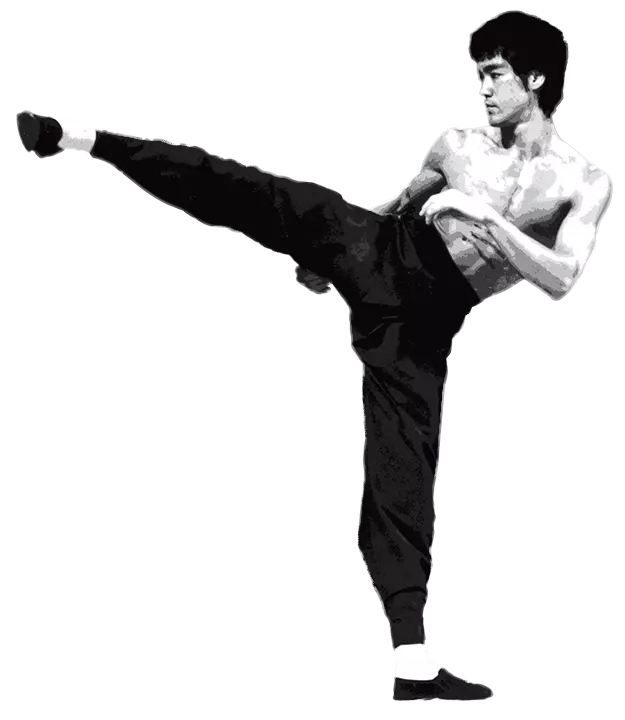

About me
Hi, I’m Vitor Videira. I graduated as a digital designer by Universidade Anhembi Morumbi in 2018. I’ve been working with web development since 2017, creating custom themes to wordpress sites and specializing in front-end development. Since 2019, I’ve been working as a freelance developer.
In my career, so far, I made part of multidisciplinary teams, working with designers and other developers. I participated in some big projects for clients like Getnet, B9, etc.

Be Water, My Friend. Empty your mind. Be formless, shapeless, like water. You put water into a cup, it becomes the cup. You put water into a bottle, it becomes the bottle. You put it into a teapot, it becomes the teapot. Now water can flow or it can crash. Be water, my friend.